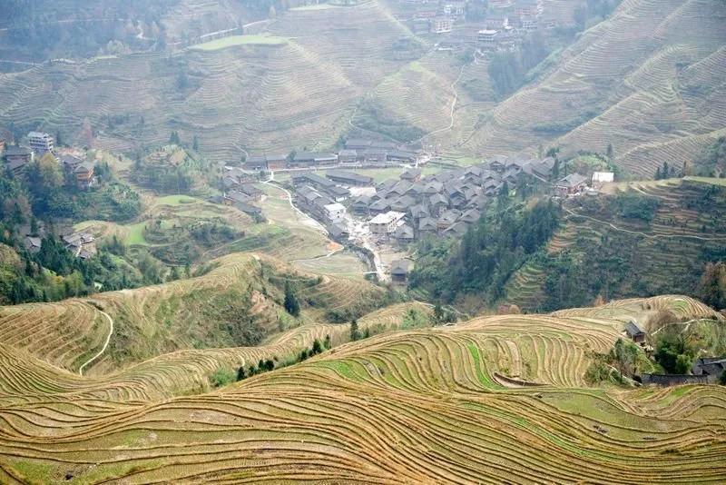
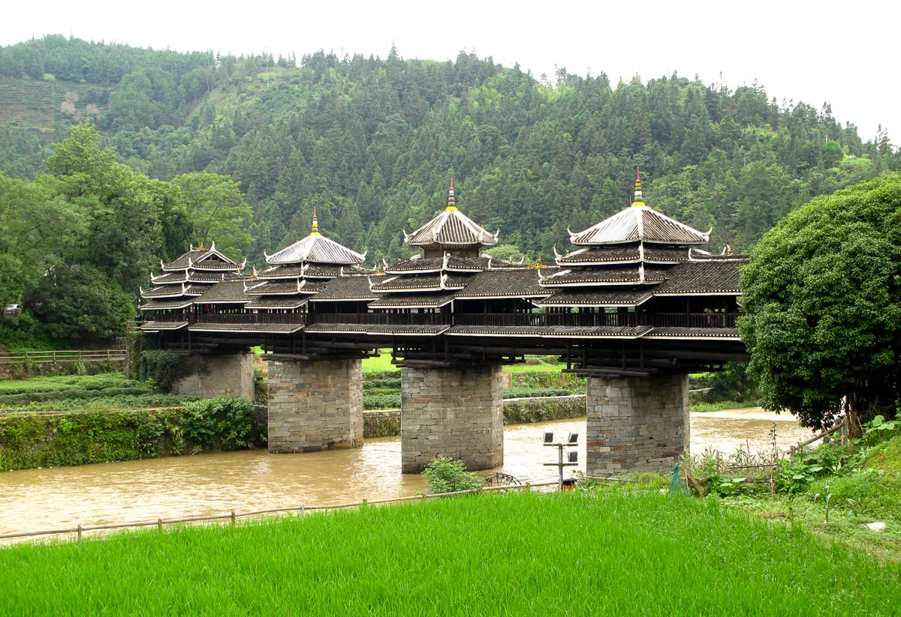
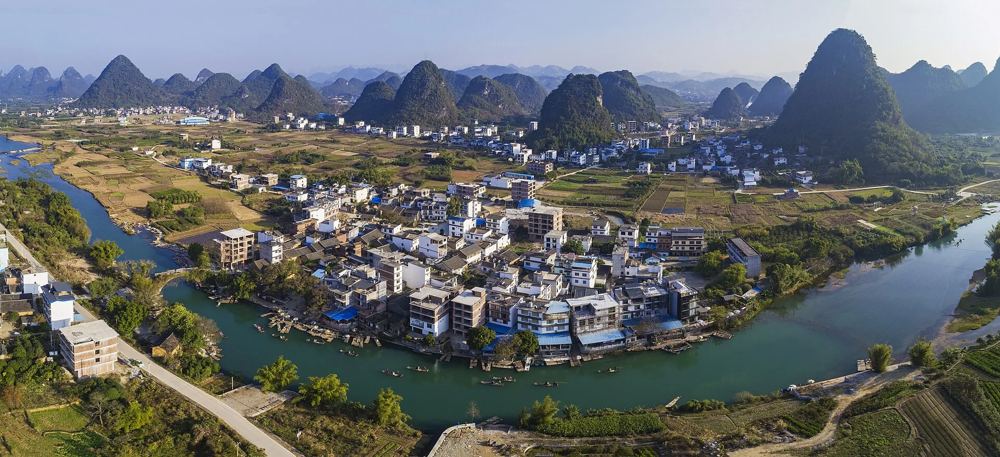
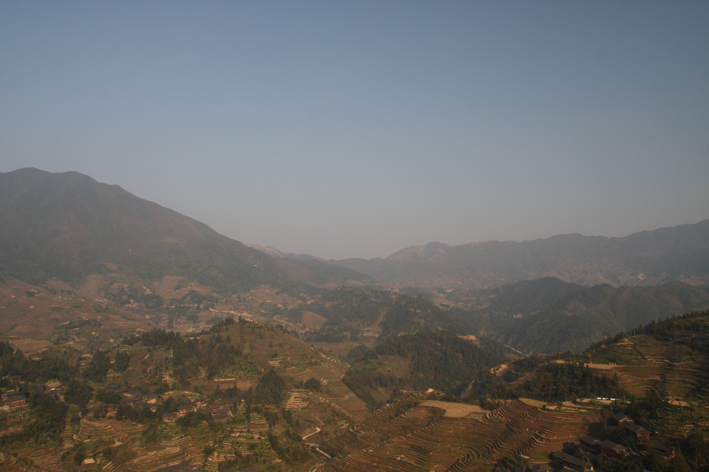

Layered Rice Terraces
千层梯田 · Mirror steps
Flooded terraces reflect the sky in spring; in autumn they turn gold. The patterns change completely with the season.

龙脊梯田 · Where mountain farmers have sculpted the hills for 800 years
Walk layered rice terraces that climb like stairways into the clouds, passing wooden villages of the Zhuang and Yao people, with sunrise views over a sea of mist.
At a glance
The Longji Rice Terraces are one of China’s most impressive man-made landscapes. A trek here is a mix of gentle hiking, village exploration, and some of the best sunrise photography in southern China.
The Longji Rice Terraces, also known as the Dragon’s Backbone Terraces, are not just beautiful — they are a 650-year-old feat of engineering. Built by Zhuang and Yao minority communities, the terraces turn the steep mountainsides into a cascading pattern of water, rice, and sky.
A trek here is less about reaching a summit and more about walking through the landscape itself. The trails connect villages like Ping’an and Dazhai via stone paths that pass guesthouses, small shops, and viewpoints. Some sections are steep, but the pace is slow and the scenery rewards every step.
Local tip: Stay overnight in a wooden guesthouse inside the terraces. The sunrise and sunset are the real highlights, and day-trippers miss the best light.
The signature sights and experiences that make Longji Terraces Trek special.
千层梯田 · Mirror steps
Flooded terraces reflect the sky in spring; in autumn they turn gold. The patterns change completely with the season.

云海日出 · Dawn from the ridges
From viewpoints like Golden Buddha or Thousand-Layer, the morning light turns the terraces into bands of gold and silver.

壮寨瑶寨 · Wooden mountain homes
Traditional wooden houses cling to the hillsides, with minority women in hand-embroidered clothing selling crafts and snacks.

石板路 · Ancient trails
The trekking paths are paved with local stone, sometimes centuries old, winding between fields and forests.

田间劳作 · Living agriculture
Farmers still plant and harvest by hand here. You may see water buffalo plowing, ducks in the paddies, and families transplanting rice.
Ways to experience Longji Terraces Trek, from the classic route to a quicker highlight.
4–5 hours · moderate · circular
Enter at the main gate Buy a ticket and take the shuttle bus to Ping’an village.
Hike to Seven Stars and Moon Viewpoint About 40 minutes of stone steps up the ridge.
Continue to Thousand-Layer Terraces The most dramatic wide-angle view of the terraces.
Loop back through Zhongliu village A quieter path with fewer tourists.
Return to Ping’an Rest with tea and sweet rice cakes at a local guesthouse.
6–7 hours · challenging · one-way
Start in Ping’an Begin early, around 7:30 AM.
Cross the ridges between villages A full traverse of the terraced mountains.
Pass Tiantouzhai village Halfway point with basic snack stops.
End at Dazhai Famous for the Golden Buddha Summit viewpoint.
Stay overnight or shuttle back Dazhai has guesthouses and a shuttle bus to the parking lot.
April – May
Terraces are flooded and mirror-like; planting season brings lush greens.
Late September – October
Golden harvest season — the most photogenic and busiest time.
Winter
Fewer visitors and stark, sculptural terraces after the harvest.
Stay overnight
Day trips miss sunrise and sunset — the best parts of the experience.
Expect lots of steps
There are stone steps everywhere. Trekking poles help, especially on the descent.
Book a sunrise-view guesthouse
Stay near a viewpoint so you can roll out of bed for the dawn light.
Try bamboo rice and home cooking
Local guesthouses serve simple, fresh meals made with ingredients from the terraces.
Check the weather
Fog can hide the views, but it also creates dramatic sea-of-clouds scenes.
From Guilin to Longji Direct bus or private transfer (2–2.5 hours, ¥50–80 per person by bus).
Buy the entry ticket ¥80–90 at the main gate; the shuttle bus to the villages is included.
Choose a base village Ping’an is more accessible and compact; Dazhai is more remote with bigger views.
Stay overnight Book a wooden guesthouse in advance during peak season (May and October).
| Item | Detail |
|---|---|
| Longji entry ticket | ¥80–90 — includes shuttle bus to villages |
| Guilin – Longji bus | ¥50–80 — one way, 2–2.5 hours |
| Private transfer | ¥400–600 — car/van from Guilin, more flexible |
| Guesthouse (mid-range) | ¥150–300/night — wooden rooms with valley views |
| Guided trek | ¥200–400/person — half-day with local guide |
| Best duration | 2 days / 1 night minimum |
Prices are reference values. Longji is best experienced with an overnight stay. Entry tickets are valid for the duration of your stay.
Gallery

Good to know
At least one night. The sunrise and sunset are the highlights, and the trails are best explored without rushing. Two days and one night is ideal for most travelers.
The Ping’an village loop is moderate with many stone steps. The Ping’an to Dazhai trek is challenging and long. Most travelers can handle the loop with reasonable fitness and good shoes.
April–May for flooded, mirror-like terraces and fresh green; late September–October for golden harvest. Winter is quiet but the terraces are bare. Summer is lush green but hot and humid.
Yes, but it is not recommended. The drive is 2–2.5 hours each way, so you would only have a few hours on the mountain. You would miss sunrise, sunset, and the peaceful evening atmosphere.
Not for the main Ping’an loop, which is well marked. For the Ping’an to Dazhai traverse or off-trail viewpoints, a local guide is helpful and supports the village economy.
Good walking shoes, layers for cool mornings, rain gear, sunscreen, and a small daypack. Trekking poles are useful for the stone steps.